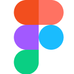
FigmaPORTFOLIO PROFESSIONNEL
EMANUEL FURTADO LOPES
Je conçois des identités, des campagnes et des expériences digitales qui relient stratégie, image et culture visuelle.
01 / INTRO
Des idées, une stratégie, puis une forme qui fait sens.
Mon profil se situe à la rencontre de la communication, de la direction artistique et du design d'interface. J'aime comprendre un contexte, identifier ce qu'une marque ou un projet doit raconter, puis construire une identité et des supports capables de porter ce message avec cohérence.
STRATÉGIE DE COMMUNICATION
IDENTITÉ VISUELLE
UX / UI DESIGN
CRÉATION DE CONTENU
02 / SELECTED WORK
Projets sélectionnés
07 projets — communication, branding, UX/UI et entrepreneuriat.
03 / OUTILS
Mon environnement
de création.
Des outils de conception, de création, de montage et de collaboration utilisés selon les besoins du projet.
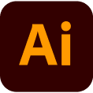
Illustrator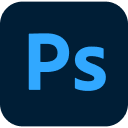
Photoshop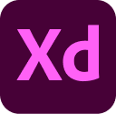
Adobe XD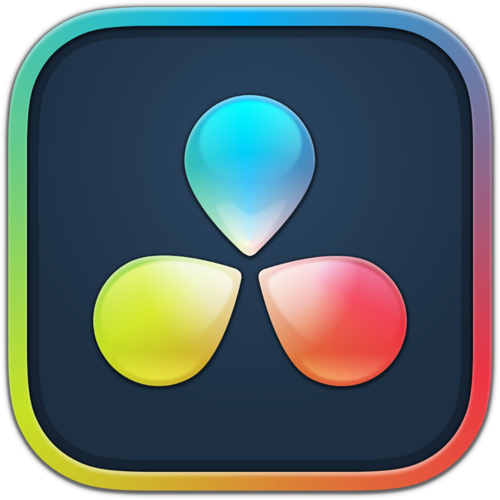
DaVinci Resolve
CapCut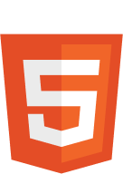
HTML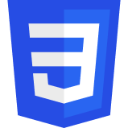
CSS Google Workspace
Google Workspace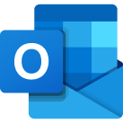
Outlook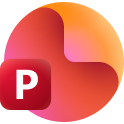
PowerPoint04 / EXPÉRIENCES
Du terrain
aux supports.
Des contextes professionnels différents, avec un même fil : comprendre, créer et coordonner.
EXPÉRIENCE PROFESSIONNELLE · GROUPE ADP
Communication
Engagement Sociétal.
Au sein de la division Engagement Sociétal du Groupe ADP, je participe à la création et à la coordination de contenus pour quatre entités aux identités différentes : Engagement Citoyen, Fondation ADP, FDCAP et Diversité & Inclusion.
Cette expérience me place à la fois dans la production et dans la coordination : il faut comprendre les besoins de plusieurs interlocuteurs, adapter le ton et le format, gérer les priorités et conserver une cohérence visuelle d'ensemble.
CONTEXTE
Une expérience au sein de la division Engagement Sociétal, avec plusieurs entités et interlocuteurs à accompagner.
MISSIONS
Visuels, vidéos, supports imprimés, publications digitales et templates réutilisables.
COORDINATION
Échanges avec plusieurs équipes, récupération des besoins, ajustements et gestion des priorités.
ÉVÉNEMENTIEL
Participation à des actions de mobilisation et présence terrain lorsque la communication accompagne un événement.
AUTONOMIE
Passage progressif d'une exécution guidée à une prise d'initiative plus forte sur les formats et les propositions.
ENJEU
Créer un système suffisamment commun pour rester cohérent, sans effacer l'identité propre de chaque entité.
CE QUE J'AI APPRIS
Cette partie sera complétée à partir de ton mémoire afin de reprendre précisément ton bilan, tes apprentissages et ta progression.
OUTILS & MÉTHODE
Les outils, méthodes de travail et exemples concrets seront repris directement du mémoire et des visuels que tu vas fournir.
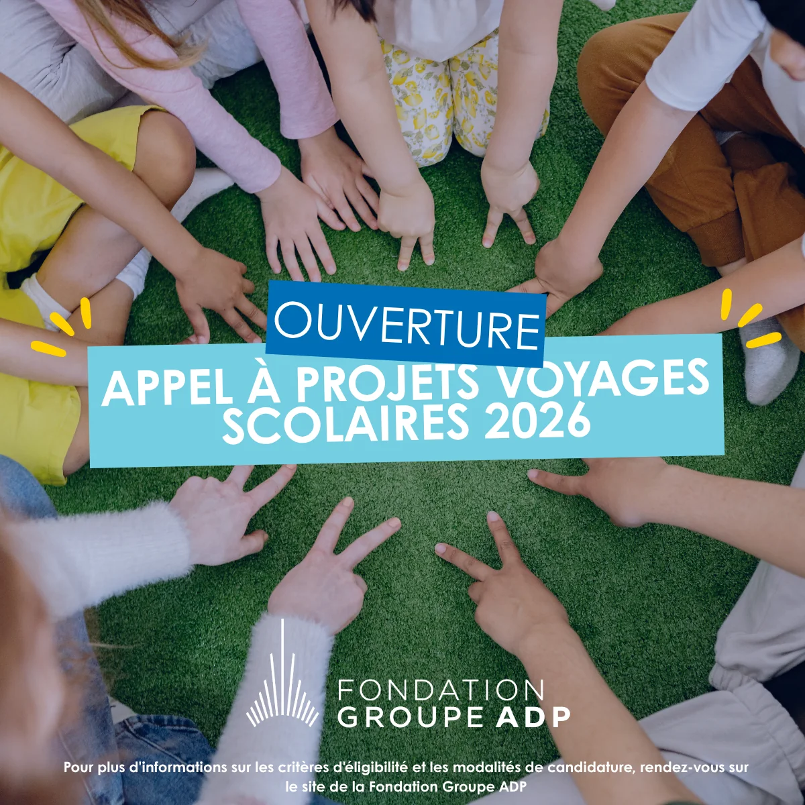
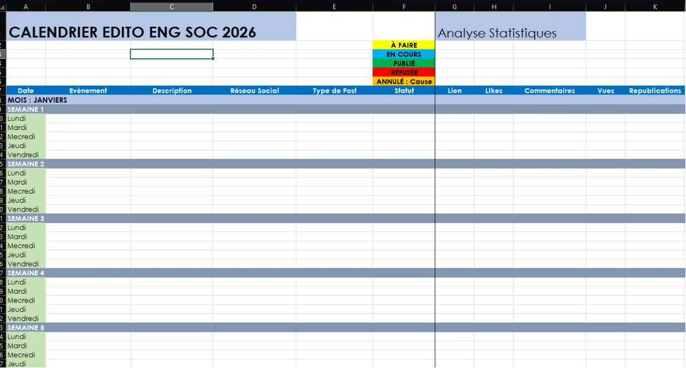
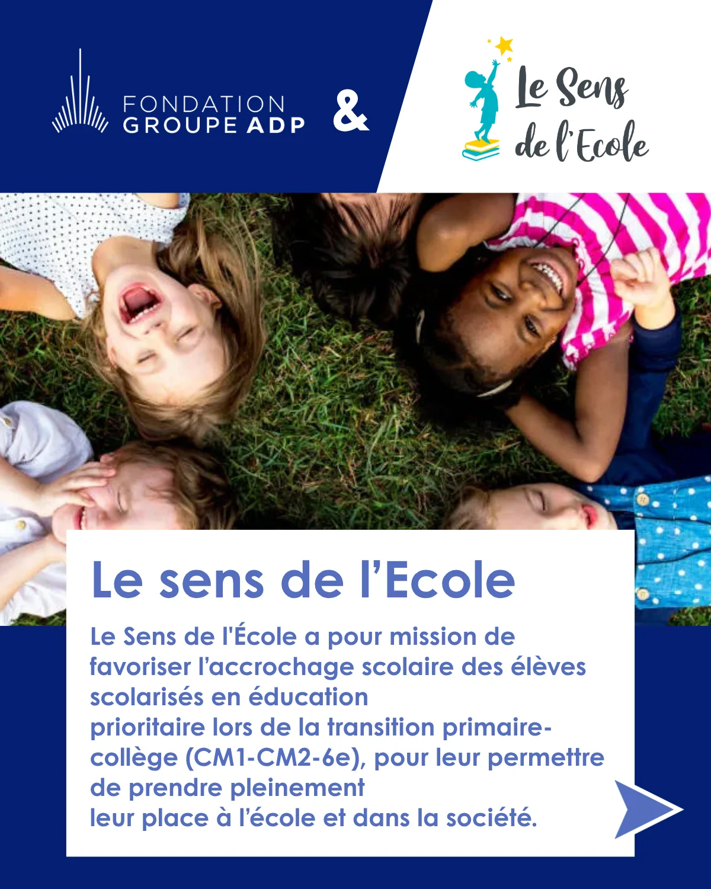
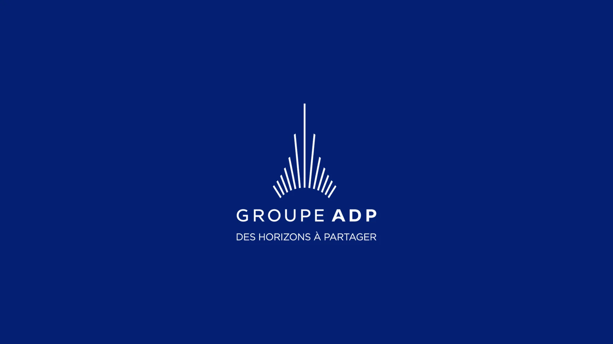
STAGE · SEVRAN
Compétences
Emploi.
J'ai également effectué un stage chez Compétences Emploi à Sevran. Cette structure accompagne les habitants dans leurs démarches d'insertion, de recherche d'emploi et de formation.
Ce stage fait partie de mes premières expériences en environnement professionnel. Il m'a permis de découvrir le fonctionnement quotidien d'une structure locale tournée vers l'accompagnement, avant d'évoluer vers des missions de communication plus larges et plus autonomes dans mes expériences suivantes.
STRUCTURE DU STAGE
Cette expérience sera détaillée à partir de ton mémoire : présentation de la structure, contexte du stage, missions, réalisations, outils, organisation du travail et bilan personnel.
MISSIONS
À compléter à partir du mémoire.
RÉALISATIONS
À compléter avec les exemples et les images que tu vas fournir.
OUTILS
À compléter avec les logiciels réellement utilisés pendant le stage.
BILAN
À compléter avec ta progression et les apprentissages décrits dans le mémoire.
05 / À PROPOS
EMANUEL,
entre stratégie et image.
Je m'appelle Emanuel Furtado Lopes. Je suis étudiant en troisième année de BUT Métiers du Multimédia et de l'Internet à l'IUT de Bobigny, dans le parcours Stratégie de communication, UX et UI Design.
Basé à Paris, je m'intéresse particulièrement à la manière dont une marque construit sa cohérence visuelle et son discours à travers plusieurs supports, du digital au print. Ma formation m'a amené à travailler sur des projets allant de la stratégie de communication à la conception d'interfaces, en passant par l'identité visuelle et la création de contenus.
En parallèle, je pratique l'illustration numérique dans un style qui mêle manga, pop culture et mode. J'aime utiliser ces références comme un laboratoire personnel : elles nourrissent mon regard sur la composition, l'image, les codes culturels et la direction artistique.
Mon objectif est de continuer à développer un profil hybride, capable de réfléchir à la stratégie d'un projet tout en participant concrètement à sa traduction visuelle.
UNIVERS
- Direction artistique
- Mode & streetwear
- Manga & pop culture
- Musique
- Éditorial
- Design digital
LANGUES
- Français — courant
- Anglais — B2
- Espagnol — notions
- Portugais — notions
06 / CONTACT
Une idée,
un projet,
on échange.
Je suis ouvert aux opportunités en communication, direction artistique, création de contenu et UX/UI.
TÉLÉCHARGER MON CV ↓Ajoute ici ton e-mail et ton LinkedIn avant la mise en ligne.